Vigil is a self-hosted uptime and API monitor. A background worker probes each URL on a schedule, records every response, opens an incident after repeated failures, closes it on recovery with a one-sentence explanation, and publishes a public status page. Review 1 defined the product: vision, 25 user stories, MoSCoW priorities, six wireframes and a system diagram. This document explains how that was turned into structure. It covers which principles shaped the code, which architectural style was chosen and why, how the UI was made easy to use, and how the design absorbs future change. Every snippet is taken from the repository, with its file and line range below it.
Each boundary hides its mechanism behind a small interface. On the frontend, no page ever calls fetch, reads
the token, sets headers or handles an expired session. All four pages call one generic function:
export async function api<T>(path: string, init: RequestInit = {}): Promise<T> {
const headers: Record<string, string> = { "Content-Type": "application/json", ...(init.headers ?? {}) };
const t = token();
if (t) headers.Authorization = `Bearer ${t}`;
const res = await fetch(`${API}${path}`, { ...init, headers, cache: "no-store" });
if (res.status === 401) { // one place decides what "signed out" means
clearSession();
window.location.href = "/login";
throw new Error("Session expired.");
}
if (!res.ok) throw new Error((await res.json().catch(() => ({}))).detail ?? `Request failed (${res.status}).`);
return res.status === 204 ? (undefined as T) : ((await res.json()) as T);
}The backend treats Redis the same way. cache.py exposes three verbs and absorbs every Redis failure, so to
its callers the cache is optional: if Redis is down, reads fall through to PostgreSQL rather than erroring.
def get_json(key: str) -> Any | None:
try:
raw = client().get(key)
except redis.RedisError:
return None # a cache outage looks exactly like a cache miss
return json.loads(raw) if raw else None
def invalidate(pattern: str) -> None:
try:
conn = client()
for key in conn.scan_iter(match=pattern, count=200):
conn.delete(key)
except redis.RedisError:
passWhy it matters: moving the session token from localStorage to an httpOnly cookie changes one file,
api.ts. Swapping Redis for another store changes one file, cache.py. No page and no router has to be
touched.
The code is split into four layers, and every module sits in exactly one of them (Figure 2). Dependencies only point
downward: routers use services, services use models, and nothing imports upward. The probe worker is a second
process, not a second codebase. worker.py is a 40-line loop over the same probe.py,
models.py and config.py that the API uses:
def main() -> None:
wait_for_db()
log.info("worker online, cycle every %ss", settings.probe_interval_seconds)
while True:
db = SessionLocal()
try:
checked = run_cycle(db) # all logic lives in app/probe.py
if checked:
log.info("cycle complete, %s monitor(s) checked", checked)
except Exception:
log.exception("cycle failed, continuing") # one bad cycle never kills the worker
finally:
db.close()
time.sleep(settings.probe_interval_seconds)| Module | Single responsibility | User stories |
|---|---|---|
routers/auth.py | Register and sign in; issue a JWT | US-01, US-02 |
routers/monitors.py | Monitor CRUD, response-time series, ownership check | US-05 – US-12 |
routers/incidents.py | Incident feed, open-only filter, acknowledge | US-15, US-18 |
routers/status.py | Unauthenticated, cached public status feed | US-16, US-17 |
probe.py | Checking engine and incident state machine | US-13, US-14, US-21 |
services.py | Shared read queries: 24-hour rollup, open incident, unique slug | US-08, US-14 |
security.py | Password hashing, JWT issue/verify, current_user dependency | US-01 – US-04 |
cache.py / db.py / config.py | Redis access / sessions / every tunable from environment variables | US-23, US-24 |
probe.py holds only the checking engine, split into three functions that each do one step:
due_monitors() decides which monitors to check, probe_once() measures one of them and
returns a Check without touching the database, and apply_result() performs the state
transition. Because measuring never writes, probe_once can be unit-tested with a fake HTTP client. All
of the transition logic is in one place:
def apply_result(db: Session, monitor: Monitor, check: Check) -> None:
monitor.last_checked_at = datetime.now(timezone.utc)
if check.ok:
monitor.consecutive_failures = 0
monitor.current_status = "degraded" if check.latency_ms > 2000 else "up"
incident = open_incident(db, monitor.id)
if incident is not None: # recovery closes the incident
incident.resolved_at = datetime.now(timezone.utc)
incident.summary = f"{monitor.name} recovered after {minutes:.0f} min. Trigger: {incident.cause}. ..."
else:
monitor.consecutive_failures += 1
if monitor.consecutive_failures >= settings.failure_threshold: # flap guard: 2, not 1
monitor.current_status = "down"
if open_incident(db, monitor.id) is None:
db.add(Incident(monitor_id=monitor.id, cause=check.error or "check failed"))
db.add(check)
db.commit()
cache.invalidate(f"monitors:list:{monitor.owner_id}") # the only link back to the API
cache.invalidate(f"monitors:checks:{monitor.id}:*")
cache.invalidate("status:public:*")MonitorOut, IncidentOut)
on one side are mirrored by TypeScript types in api.ts on the other. A type mismatch fails next build in
CI, so contract drift cannot ship.Depends. None of them parses a token or opens a connection, and ownership is enforced in one helper:def _owned(db: Session, monitor_id: int, user: User) -> Monitor:
monitor = db.get(Monitor, monitor_id)
if monitor is None or monitor.owner_id != user.id:
raise HTTPException(status_code=404, detail="No monitor with that id.") # 404, not 403: no existence leak
return monitor
@router.get("")
def list_monitors(db: Session = Depends(get_db), user: User = Depends(current_user)): ...config.Settings reads the environment once. No module calls
os.environ, so the failure threshold, probe timeout and TTLs can all change without a code edit.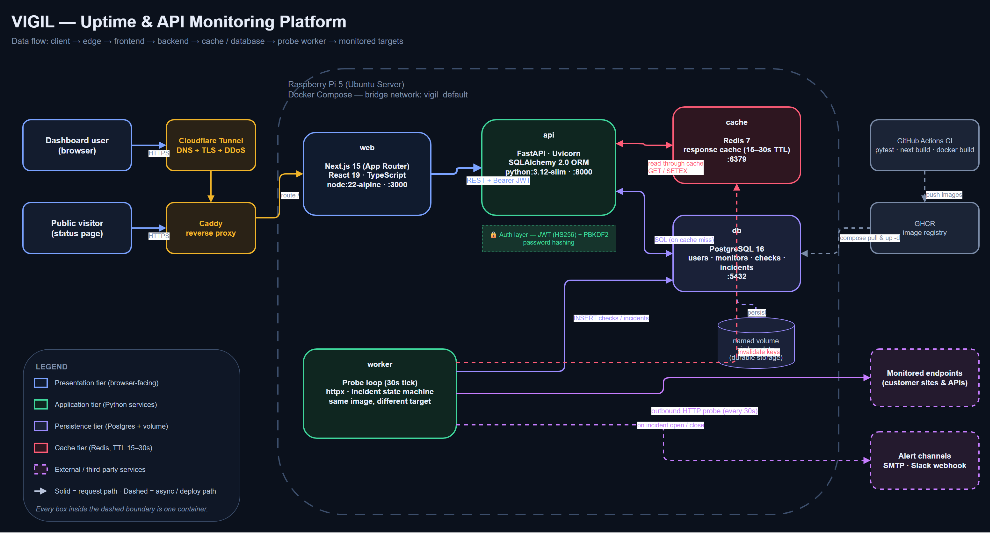
Vigil is a client–server system with a layered backend (presentation → API → domain services → data access), packaged as five containers: web, api, worker, PostgreSQL and Redis. It is deliberately not microservices. The API is a single process with four routers over one database. The only thing split out is the worker, and that split has a concrete reason.
The system diagram is unchanged since Review 1 because the implementation matched it. The update for this review is three new design views that go one level deeper: modules (Figure 2), data (Figure 3) and behaviour (Figure 4).
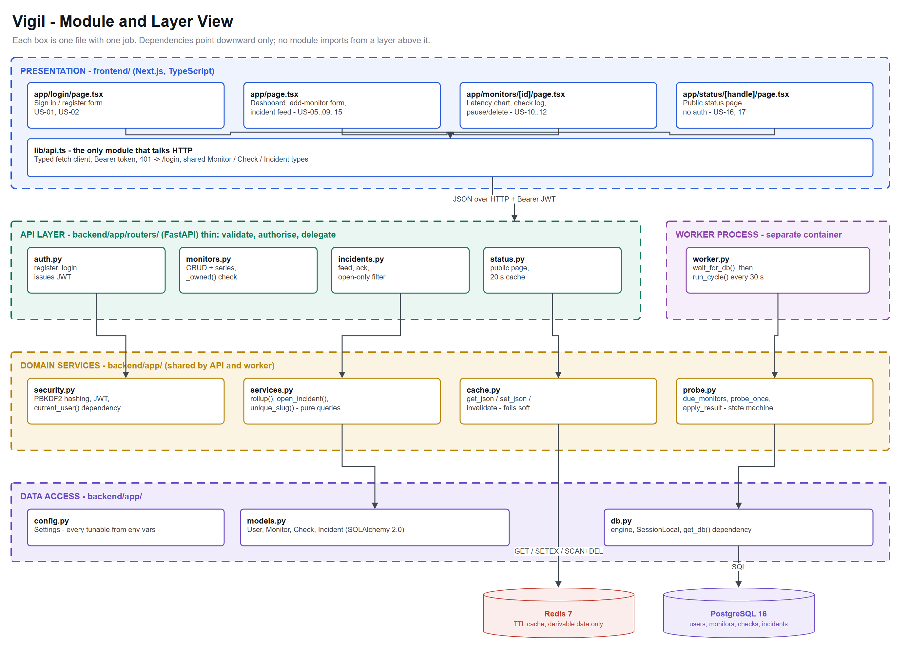
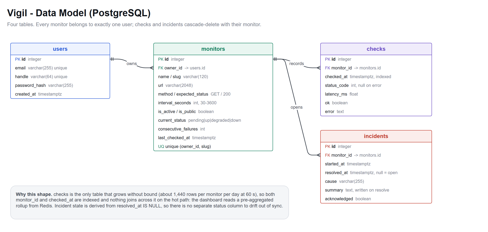
resolved_at is null, so there is no second status column to fall out of sync.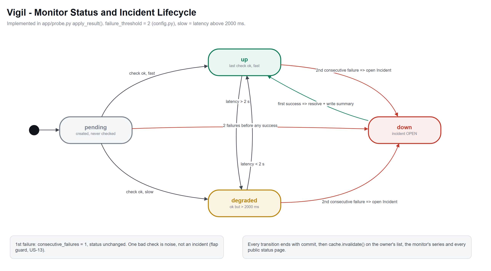
apply_result(). A single failure changes
nothing (flap guard); the second opens an incident; the first success closes it.Each of the six screens from Review 1 is shown as its wireframe (left) next to the implemented screen captured from the
running application (right). The wireframes are SVG files in docs/design/ui/wireframes/. Dragging them into a
Figma file opens them as editable vector frames.
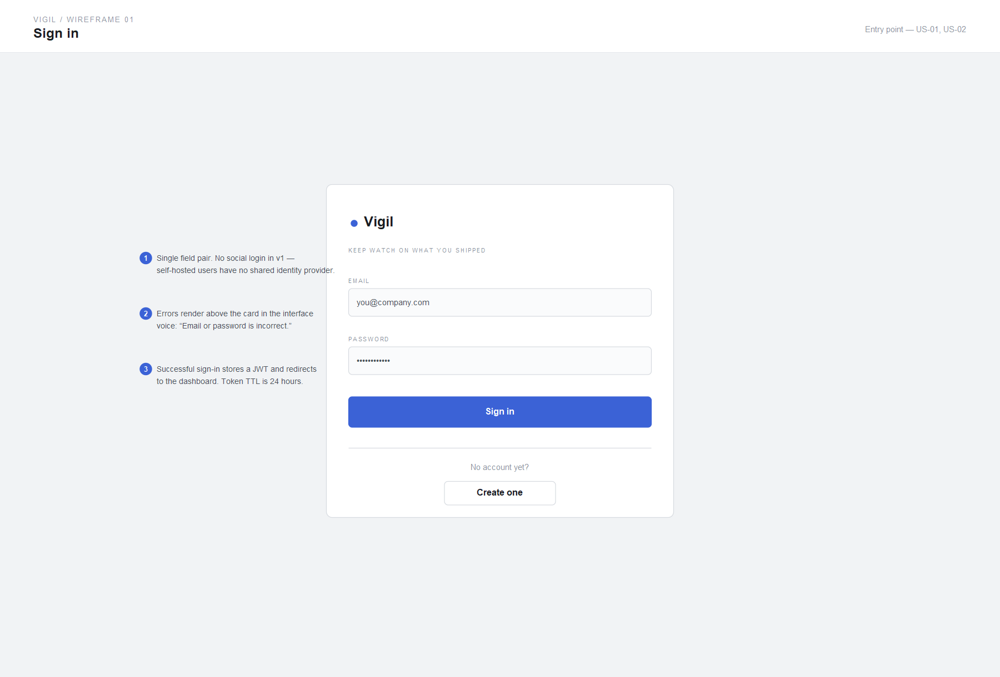
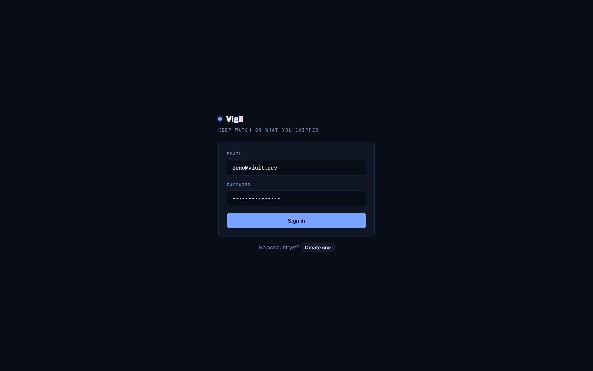
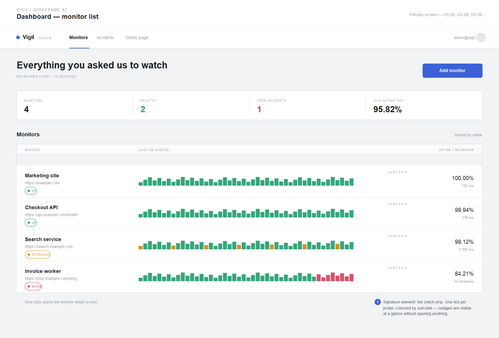
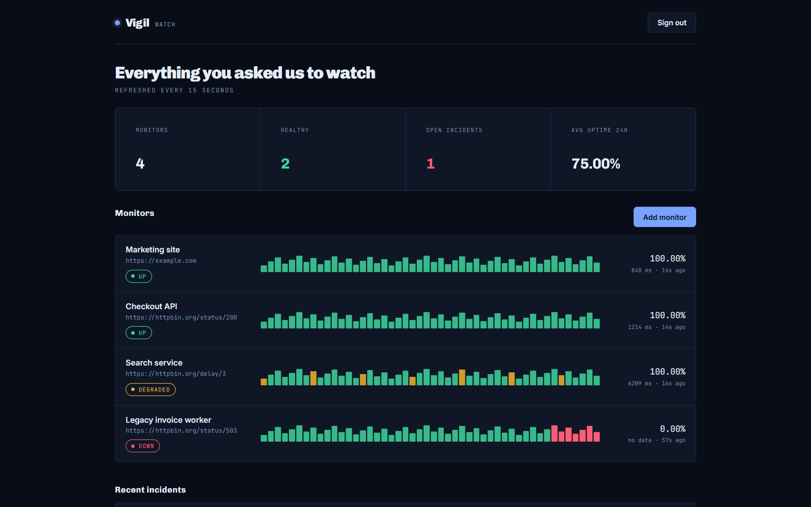
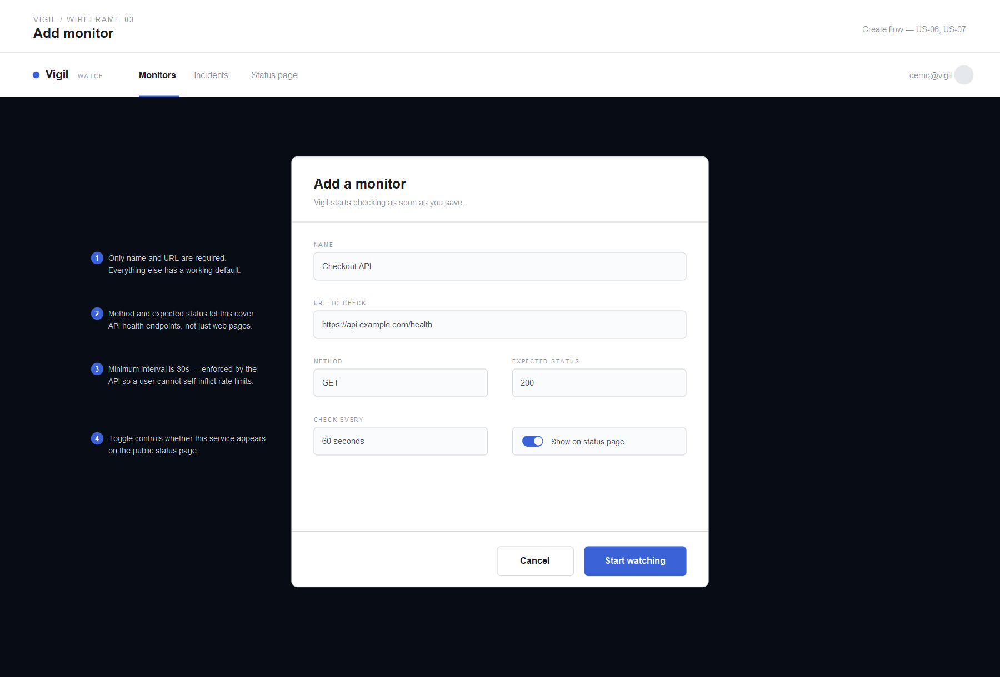
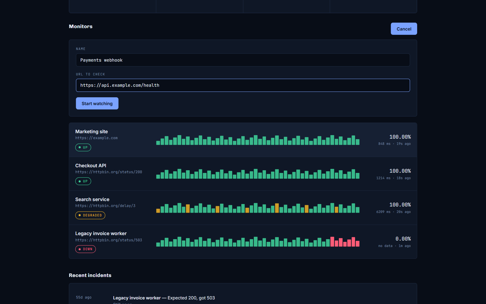
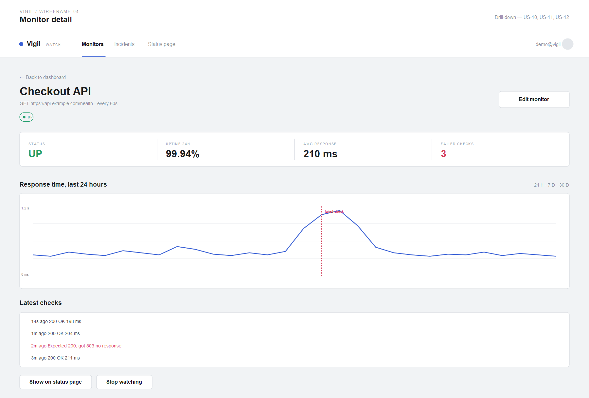
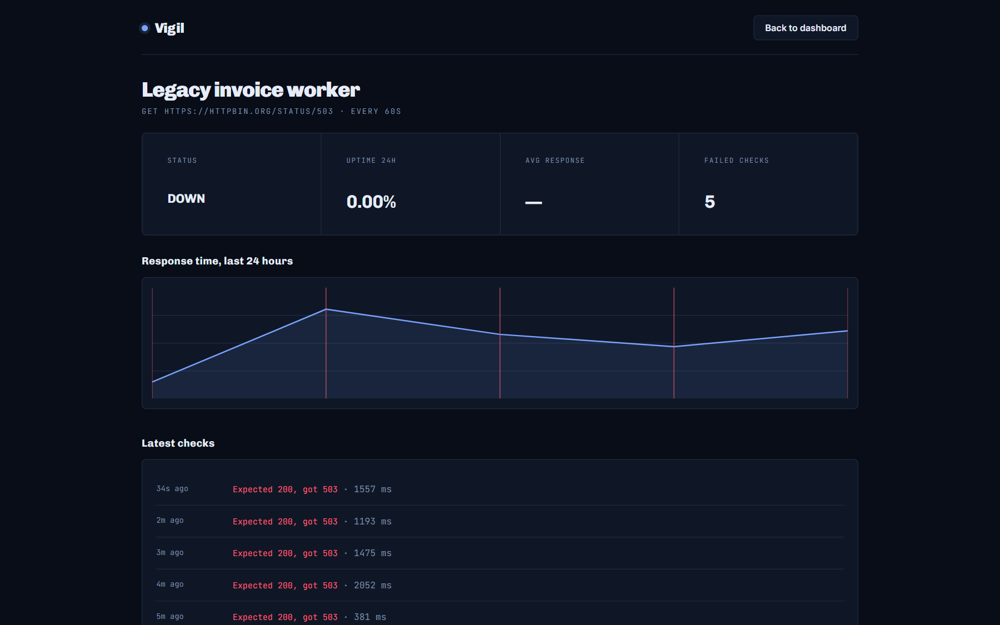
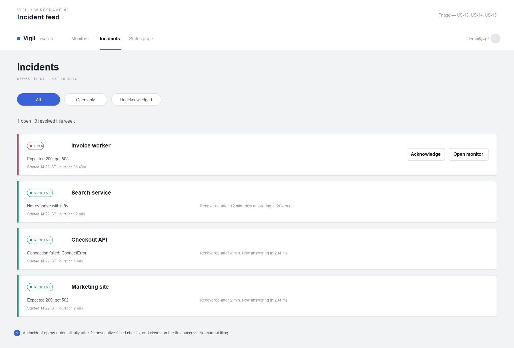
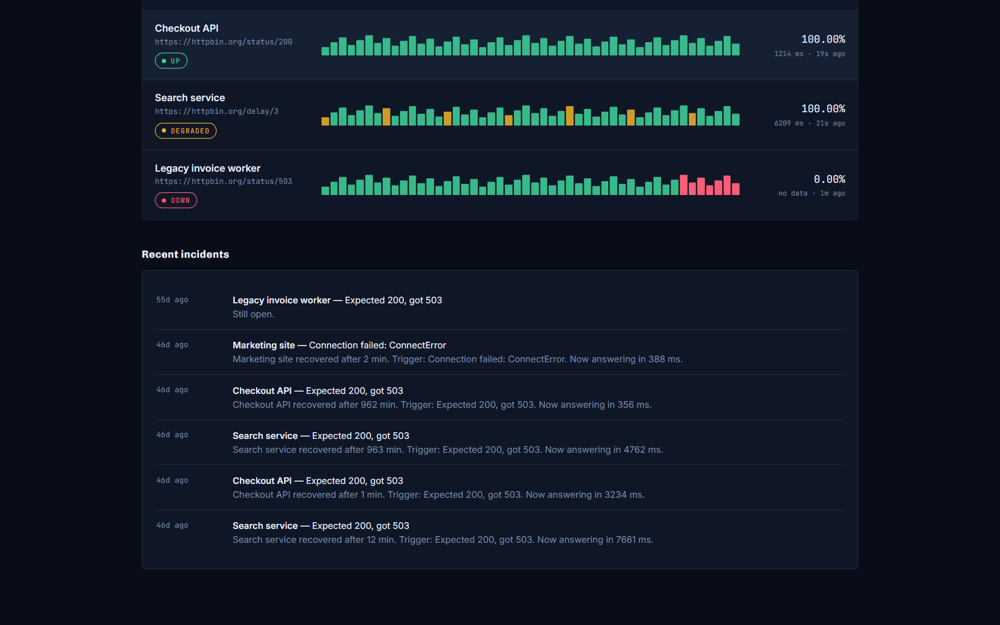
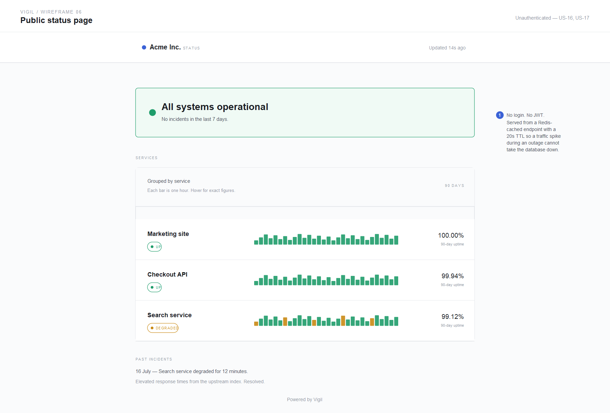
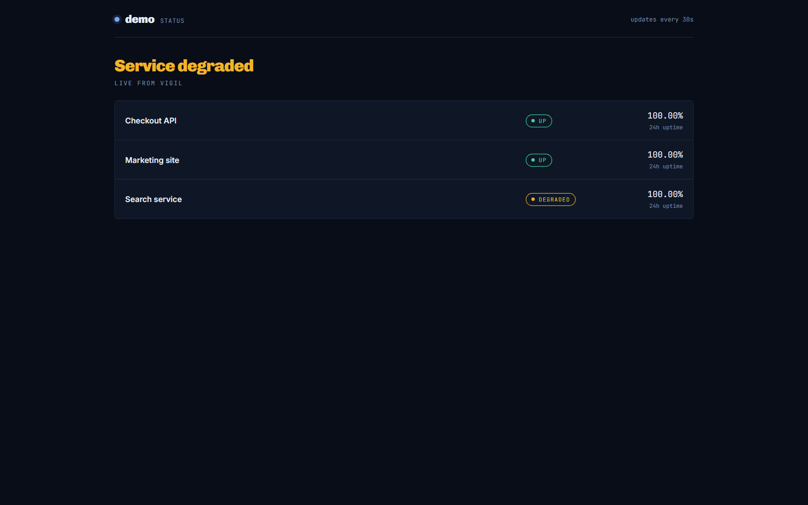
httpx.ConnectTimeout. Resolved incidents read as a sentence a non-engineer can forward to customers (US-21).globals.css.
Monospace is used only for machine data (URLs, latencies, timestamps), so it is easy to tell what the user typed from what the system
measured. Keyboard users get a visible focus ring.SCAN on each write. Cheap at this key count; it would be revisited if the number of keys grew large.config.py, not a constant in the code.
_owned() and the current_user dependency rather than being repeated in
every handler. A 404 does not reveal that the monitor exists.
api<T>() and every tunable goes through Settings, so changes to
transport, auth or configuration each happen in one file.
A design shows its worth when a change arrives. Each planned change below lands in one place, and the right-hand column lists what stays untouched:
| Future change | Where it lands | What does not change |
|---|---|---|
| Email and Slack alerts (US-19, US-20) | New alerts.py, called from the two transition points in
apply_result() | Routers, frontend, schema |
| TCP, DNS or keyword checks | A kind column plus one probe strategy per kind, chosen inside
probe_once() | The state machine, which only sees a Check |
| Check retention and downsampling | A periodic job in the worker loop | rollup() and every reader of it |
| Multi-region probing | Run N worker containers, each with a region label | API and frontend |
| Token in an httpOnly cookie | lib/api.ts and security.py | All four pages |
Capturing the screens for this document exposed a bug. The dashboard counted open incidents from the incident feed, but
the feed is capped at the newest 100 rows. An incident that stayed open long enough fell off the list, and the "Open incidents"
tile read 0 while a monitor was down. The API already had an open_only filter, so the fix touched only
the page that consumed it:
// Open incidents are fetched on their own: the feed is capped at the
// newest 100, so an old incident that is still open can fall off it.
const [m, i, open] = await Promise.all([
api<Monitor[]>("/api/monitors"),
api<Incident[]>("/api/incidents"),
api<Incident[]>("/api/incidents?open_only=true"),
]);
setIncidents([...open, ...i.filter((x) => x.resolved_at)]);create_all(). Alembic has to be adopted before the
first schema change after release.probe_once() and
apply_result() were kept free of I/O coupling, the state machine in Figure 4 can be tested table-style without a
network.docs/design/
├── README.md index of this folder
├── diagrams/
│ ├── 01-architecture.drawio + .png
│ ├── 02-module-layers.drawio + .png
│ ├── 03-data-model.drawio + .png
│ └── 04-monitor-state-machine.drawio + .png
├── ui/
│ ├── wireframes/ 6 × .svg (Figma-importable) + .png
│ └── screens/ 6 × .png captured from the running app
└── Vigil_Software_Design_Document.pdf• Editable sources: every diagram is a .drawio file that opens at
app.diagrams.net. The four new ones are generated by
scripts/make_design_diagrams.py.
• PNG exports: scripts/export_diagrams.py renders each .drawio with the official
diagrams.net viewer, so every PNG matches its source exactly.
• README.md: new section "Software Design" embeds the diagrams and summarises the main design choices.